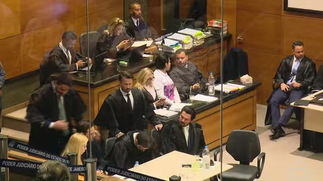

Confira Aqui
Suspeitas envolvem Câmara Municipal de Angra dos Reis (RJ). Assessora parlamentar cursava medicina presencialmente em Juiz de Fora (MG). PF investiga uso de cargos públicos para obtenção de apoio político.
A Polícia Federal abriu inquérito para apurar possíveis irregularidades na contratação de assessores parlamentares na câmara municipal.

Os advogados do ex-vereador Jairo Souza Santos Júnior abandonaram o plenário alegando que não tiveram acesso a todas as provas. Sem defesa de um dos réus, o júri não pode continuar.
O julgamento foi suspenso após a equipe de defesa deixar a sala do tribunal, gerando um impasse jurídico sem precedentes no caso.
Frente fria vai manter áreas de instabilidade no Sul. Calor e umidade sustentam pancadas frequentes e aumentam risco de temporais em várias regiões até o fim da semana.
O Instituto Nacional de Meteorologia emitiu alertas para chuvas intensas nos estados do Sul e Sudeste do Brasil até domingo.

Dólar abre em alta com incertezas sobre negociações entre EUA e Irã; Ibovespa recua nos primeiros negócios do dia.
Os mercados financeiros amanheceram em queda nesta segunda-feira, influenciados pela instabilidade geopolítica no Oriente Médio.

Imposto de Renda 2026: quando vou receber a restituição? Confira o calendário completo de lotes por CPF.
A Receita Federal divulgou as datas previstas para o pagamento das restituições do IRPF 2026, com o primeiro lote saindo em maio.

Projeto de lei quer permitir CNH 'comum' para dirigir veículos elétricos de até 4.250 kg sem necessidade de categoria especial.
A proposta, que já passou pela comissão de transportes, ainda aguarda votação no plenário da Câmara dos Deputados.